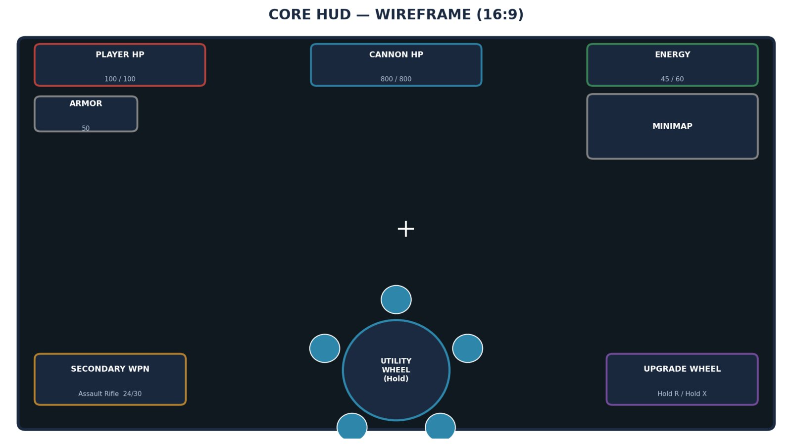
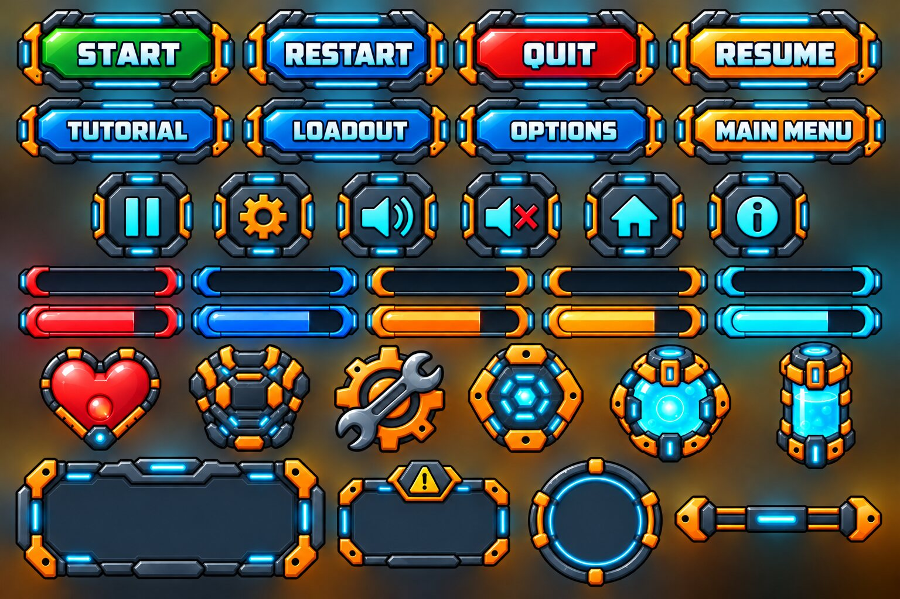
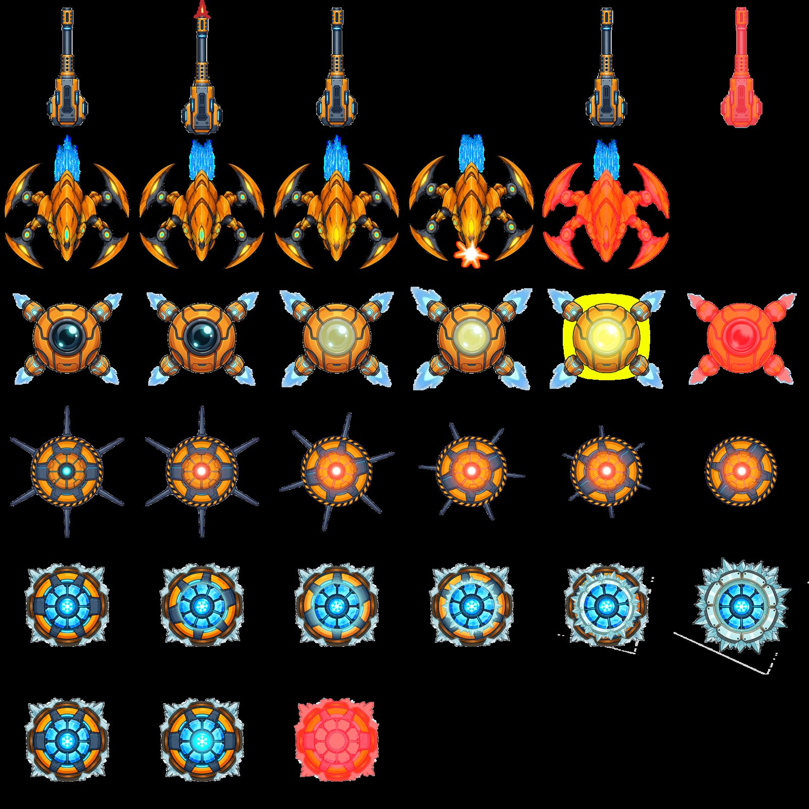

Fortress Zero
Defend the cannon. Loot the arena. Level up or die trying.
Concept
A roguelite, objective-defense shooter set in an alien megastructure. Every run starts with a loadout choice and ends with a decision: protect the stationary Cannon, or leave it to chase loot. Randomized rooms, run-based upgrades and permanent loss on death sit alongside hands-on shooting and deployable utilities, in 20 to 30 minute runs built on a six-step decision loop.
My role
Designer of the concept and its documentation: the five pillars, decision loop, enemy and cannon design, room blueprints and HUD, written as the GDD and carried into a playable Godot 4 web build.
Prototype screens
Captured from the Godot web build, which is playable on itch.io.


Three genres, one arena
Roguelite
Randomized rooms, run-based upgrades, permanent loss on death.
Objective defense
A stationary Cannon to defend, and deployable Utilities to place.
Shooter
Direct, hands-on aiming and shooting: manual and active combat.
Why it works: dual combat roles create constant risk/reward decisions; 20–30 minute runs are built on a six-way decision loop; deep loadout customization drives replayability; the resource loop is readable: kill, collect, upgrade, push forward.
A run in six steps
- BuildLoadout
- EnterRoom
- EngageEnemies
- CollectEnergy
- UpgradeDeploy
- ClearObjective
Every step is also a defense decision: leaving the Cannon to loot or upgrade always costs coverage.
Three item categories before every run
Cannon · primary, stationary
The main weapon, fixed in the arena. Upgraded in battle with collected energy; upgrades reset each run.
Handgun · secondary, mobile
Carried while roaming to collect loot. Cannot be upgraded mid-battle, only in dedicated upgrade rooms.
Utility & Traps · 5 slots
Chosen before the run. Start deactivated; cost energy to deploy anywhere in the room.
The heart of every run
A stationary weapon planted in the middle of the arena. Three types (Assault, Rail, Plasma), each with five upgrade tiers. Players must physically approach it to take control and fire.
Grows in battle
Starts at level 1. Energy from dead enemies upgrades it mid-fight.
Resets each run
In-battle upgrades don't carry over.
Vulnerable when idle
While unmanned it just sits there, and enemies can attack and destroy it.
Loss condition
If the Cannon is destroyed, the game is over.
The mobile weapon
Carried while roaming the arena to collect resources instead of manning the Cannon. Pistols, Assault Rifle, Shotgun, Railgun and SMG each have a distinct damage and range trade-off.
Design role
Trades stationary firepower for mobility and looting; a wide selection gives each run a distinct roaming playstyle.
Upgrades
Cannot be upgraded mid-battle, unlike the Cannon. Upgraded only in dedicated upgrade rooms placed between arena rooms.
Five deployable slots
All start deactivated and require energy to deploy; destroyed items must be re-deployed once enough energy is collected again. Items can be placed anywhere in the room.
| Category | What it does |
|---|---|
| Automatic Turrets | Auto-fire at enemies in range: Machine Gun, Laser and Missile variants. |
| Companions | AI support that repairs the Cannon, collects loot, or shields it from damage. |
| Drones | Mobile units that follow the player: Assault, Plasma and Bomber variants. |
| Explosives | Trigger-radius area denial: mines and charges that detonate near enemies. |
| Traps | Slow, freeze or chain enemies: Cryo, Tesla and Gravity Field. |
Character upgrades
Energy also levels up six player stats directly, not just gear. Early levels boost everything at once; later levels force a choice.
| Stat | Effect |
|---|---|
| Better Health | Raises the maximum health pool. |
| Better Defense | Reduces damage taken from enemy attacks. |
| Faster Movement | Increases movement speed for repositioning and kiting. |
| More Damage | Boosts Handgun damage significantly, Cannon damage slightly. |
| Rapid Fire | Increases the equipped weapon's rate of fire. |
| More Storage | Starts at 100 and grows every level; collecting past the cap wastes the overflow. |
Not every kill pays out. Energy drops are randomized per enemy type, so every fight is a trade-off between spending now or saving up.
The Fortress: one megastructure, six sectors
Each sector has its own hazards, enemy mix and visual identity. Futuristic human military tech meets organic-metallic alien architecture, with glowing energy conduits throughout.
| Sector | Role |
|---|---|
| Docking Bay | Infiltration and early combat; where every run begins. |
| Manufacturing Sector | Robot production floors, heavy with mechanical enemies. |
| Bio-Research Labs | Biological experiments and environmental hazards. |
| Energy Core | Reactor hazards and high-energy enemy variants. |
| Command Nexus | Elite security; Mini-Boss territory. |
| Escape Hangar | The Final Boss, and the run's escape sequence. |
Two factions, four resource drops
Aliens
Walker, Venowat, Spitvile, Swarmster.
Robots
Assault Drone, Spider Bot, Diver, Rollar. Mini-Bosses and a Final Boss back both factions.
Objectives
Vary per room: eliminate, survive, defend or capture.
Energy
Levels up character and Cannon, deploys Utilities.
Health · Repair Kit
Health refills the player; Repair Kits fix a damaged Cannon.
Coins / Gems
Currency to buy items from the store. Drops are never guaranteed, weighted by enemy type.
Win, lose and move forward
Game over
The Cannon takes passive damage when left unmanned too long, plus direct enemy attacks. The game ends if player health or Cannon health hits zero; the run restarts from a level 1 character and Cannon.
Level cleared
Completing the objective reveals multiple Gates, not one exit. Gates telegraph their risk: Safe, High-Risk, Gear, Resource or Challenge. Progression is a branching path, not a single corridor.
Screens, flows and layout


Design documentation
Excerpts from the GDD: rooms, units, utilities and cannons.


